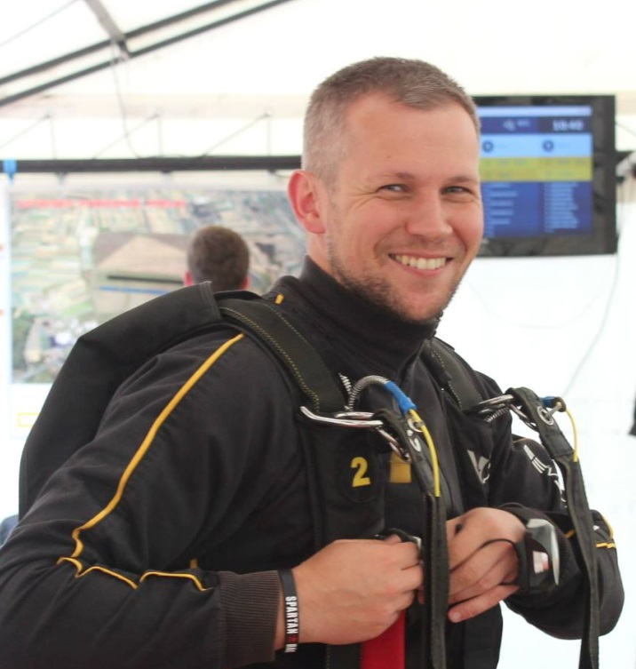
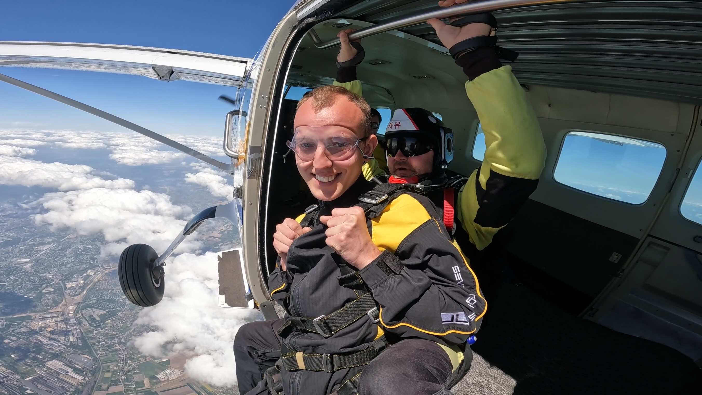

My name is Tomasz Wojdyła. I am 40 years old and nearly 20 years in professional life but event though, since October 1st 2023 I am honoured to be able to study Applied Informatics in Cracow University of Economics.
There is a little history behind my reasoning, but let me start with my experience to the date for the context of the story...
I started my career thinking of Structural Engineering. After high school in Nowy Targ, which I graduaded in 2001 year, I succesfully applied Structural Engineering in Cracow University of Technology and that part of my profession is developing ever since. Below I collected a few milestones of my education and experience in this area:
| Structural engineering related experience and trainings | ||||
|---|---|---|---|---|
| Type | Time | Institute/Company | Description | |
| From | To | |||
| Education | 2001 | 2006 | Cracow University of Technology | Master of Science in Sturctural Engineering |
| Education | 2009 | 2009 | Cracow University of Technology | Postgraduate course in Structure Dynamics |
| Education | 2010 | 2011 | Cracow University of Technology | Postgraduate studies: Design acc. to Eurocodes |
| Education | 2008 | 2020 | PZiTB, MOIIB, ArtMediatechnics and others | Multiple conferences and courses in structural engineering |
| Professional | 2004 | 2013 | Usługi Projektowe i Budowlane | Family company - structural engineer position (part time) |
| Professional | 2014 | 2014 | RPS Group | Structural Engineer - practice in Ireland (contract) |
| Professional | 2015 | 2018 | Prescient (full time) | Structural Engineering Manager - design of buildings in US (full time) |
| Professional | 2014 | - | Pracownia Projektowa KOTA | My own practice offering structural design services (part time) |
| Certification | 2012 | - | Małopolska Okręgowa Izba Inżynierów Budownictwa | Passed exam and Achieved Building Licence in structural Engineering Design (no restrictions) |
| Certification | 2017 | - | FEANI | EUR ING Certification - based on past eductaion and experience |
Being a structural engineer was an important part of my career but at some point I realized that it might not be fully compatibile with my aspirations. I was lucky enough that after graduating from Cracow UoT i joined (full time) a company Robobat, polish-french company specialized in software developement for structural engineering, where as a consulting engineer i trained and helped users to get the best results out of our tools.
Even though part of the company has been aquired by Autodesk (my current employer) in 2008, I continued to work closely with software engineers until 2013.
A few years later, in company of Prescient, after a few succesflu years in managing structural office, I got a chance to move to Technology part of the company, where for the next 4 years I managed a team of Produt Owners specialized in leading our proprietary software developmenet for design purposes. I continued comarable role in Autodesk (Product Owner) since 2022. For we that was an intense time of eductaing myslef towards more understaning in Agile sofware development, what led me to my current role as a Software Development Manager. I also collected that experience in a table below:
| Software development related experience and trainings | ||||
|---|---|---|---|---|
| Type | Time | Institute/Company | Description | |
| From | To | |||
| Professional | 2006 | 2013 | Robobat | Consulting Engineer in a Software Development company (full time) |
| Professional | 2019 | 2022 | Prescient | Product Management Team Lead (full time) |
| Professional | 2022 | 2023 | Autodesk | Product Management Team Lead (full time) |
| Professional | 2023 | - | Autodesk | Software Development Team Manager (full time) |
| Education | 2021 | 2022 | Warsow University of Technology | Postgraduate studies - IT Resource Management |
| Certification | 2021 | - | In progress | Agile Project Management |
| Certification | 2022 | 2023 | Scrum.org | Professional Scrum Product Owner I, Professional Scrum Master II, Professional Agile Leareship |
I have been trusted by my leaders and handled a position of Software Development Manager mostly due to my Domain expertise and human skills (meanwhile between 2019 and 2021 I graduated Masters of Business Administration from Cracow University of Economics and St. Gallen Business School - International MBA program).
It is however challanging to be a manager of developers not understanding well enough their regular tasks (programming). Even though it was not required my my company I decided to try to level up my skills with professional course of Applied Informatics in University. I would like to believe that challanging myslef with this course of studdies, I will:
My hobby is skydiving, what is likely known already based on my previous HTML project ;)
Therefore I would not keep it extensively long but just in a nutshell.
I started skydiving in 2016 and that was supposed to be THE activity that helps to reveal some stresses of live. Today, with a few tears in sport and more that 400 jumps on my account I definately can say that was a great choice. Skydiving made me how to think differently in stressful situations, how to prepare myslef to deal with stress, how to focus and cooperate with people of different skills and experience.
I am lucky enough to consider skydiving even as a part of my professional life. Not having enough experience yet to become an instructor, sometimes during the weekend I act as a cameraman, jumping with people doing their tandems and having a chance to record that on 'tape' (digital tape;) ).
Please find a few photos of that activity:

I will also allow myslef to use my hobby to cover 'Internet' Part of this project. It will be about one of the more misterious pieces of equipement in skydiving gear - the AAD (Automatic Activation Device).
For the purpose of this project the following data mocku-up has been proposed.
We imagine a web store that logs information about their customers.
Each customer is assigned to id in database is identified by several information such us: name, surname, email address. Service also store information about their first and last log in date (date format) and declared country of residance. Based on the registration formula database track weather the user registered represents business or not (boolean)
Database contains some information regarding customers most recent login: it is last activity date and IP address used for that activity.
Each of the registered service customers can have a pre-paid available credit (in US dolars), to be spend on goods available in web store. Seperately we track in database the cost of last purchase made (NOTE: due to the fact that I was unable to generate a single column with mocked 'money' data type in "polish złoty", I used 2 auxliary columns to generate components:
This auxliary data was used to define content of the last column as a formula adding two strings: number + list item "PLN" and return expected currency in PLN.

| Data from Mockaroo.com - First 10 records from entire set | ||||||||||||
|---|---|---|---|---|---|---|---|---|---|---|---|---|
| Id | First Name | Last Name | Register date | Country | Is business | Last activity date | Last IP | Credit | Last purchase value | Last purchase currency | Last purchase combined | |
| 1 | Alden | McBain | amcbain0@shareasale.com | 09.02.2020 | Poland | true | 07.09.2023 | 37.135.148.216 | $769.80 | 20.49 | PLN | PLN20.49 |
| 2 | Thadeus | Dedham | tdedham1@examiner.com | 10.12.2022 | United States | false | 27.10.2023 | 217.131.187.88 | $984.39 | 10.49 | PLN | PLN10.49 |
| 3 | Lizette | Buss | lbuss2@ihg.com | 26.07.2022 | New Zealand | false | 27.01.2023 | 167.86.221.7 | $609.86 | 11.46 | PLN | PLN11.46 |
| 4 | Dinny | Bonelle | dbonelle3@chronoengine.com | 28.04.2022 | United States | false | 16.07.2023 | 170.81.250.136 | $79.12 | 16.7 | PLN | PLN16.7 |
| 5 | Harwell | Sweetnam | hsweetnam4@apple.com | 24.04.2021 | South Africa | true | 23.08.2023 | 22.111.17.202 | $341.94 | 36.89 | PLN | PLN36.89 |
| 6 | Jorge | Washbrook | jwashbrook5@vimeo.com | 08.01.2022 | Greece | true | 30.05.2023 | 244.206.217.0 | $623.26 | 56.44 | PLN | PLN56.44 |
| 7 | Annmaria | Sedgmond | asedgmond6@redcross.org | 22.04.2021 | Sweden | true | 16.04.2023 | 245.156.94.111 | $47.49 | 17.88 | PLN | PLN17.88 |
| 8 | Neill | Cheal | ncheal7@posterous.com | 12.12.2020 | Greece | true | 08.10.2023 | 208.252.198.178 | $76.66 | 28.21 | PLN | PLN28.21 |
| 9 | Em | Pentland | epentland8@cargocollective.com | 03.03.2020 | Sweden | true | 19.10.2023 | 4.181.251.92 | $771.22 | 21.13 | PLN | PLN21.13 |
| 10 | Brandais | Skettles | bskettles9@cisco.com | 07.04.2020 | Argentina | false | 05.05.2023 | 201.95.114.127 | $703.07 | 84.83 | PLN | PLN84.83 |
CSV stands for Comma-separated values that is a text file format that uses commas to separate values. A CSV file stores tabular data (numbers and text) in plain text, where each line of the file typically represents one data record.
Detailed description of CSV format in Wikipedia is available here.
Following the W3C, the key characteristics of CSV are as follows:
Press here to access CSV file generated from Mockaroo.com
Press here to download CSV file generated from Mockaroo.com
XML stands for Extensible Markup Language that is a markup language and file format for storing, transmitting, and reconstructing arbitrary data.
Detailed description of XML format in Wikipedia is available here.
Following the XML Certification Program the main features of XML are as follows:
Press here to access XML file generated from Mockaroo.com
JSON stands for JavaScript Object Notation that is an open standard file format and data interchange format that uses human-readable text to store and transmit data objects consisting of attribute–value pairs and arrays (or other serializable values).
Detailed description of JSON format in Wikipedia is available here.
Following the Medium website the key characteristics of JSON file are as follows:
Press here to access JSON file generated from Mockaroo.com
Following One Schema, here are some general guidelines when deciding what file format to use:
Ultimately, the choice of format depends on the specific needs of your application and the data you're working with.

AAD stands for Automatic Activation Device. This item is one of 4 main parts of the skydivig rig (term 'rig' refers to what we see as a 'backpack' on skydivers' back).
Skydiving rig typically consist of:
Although AAD is not obligatory in every country or dropzone (place/airfield where skydivers do jumps) most of skydiviers invest in that piece of equipement for their own safety.
Role of the AAD is very simple. It initiates the reserve canopy deployment in particuar contidions (see below) without further action of the skydiver. Differently speaking, even if the skydiver would become for any reason unconsious and therefore unable to take any action to 'save his life', active AAD would do this for him.
As long as role of AAD is quite straightforward, the technicalities behind 'how it works' are a bit more complicated.
Simply speaking we could divide the way it works to two parts:

AAD is activated (turned on) by skydiver before boarding the plan. In that moment it registers the atmospheric preasure and starting from that moment it controls the altitude (change of the altitude) on which the skydiver is. It is mostly possible also because airplanes used typically for skydiving do not have pressurized cabins. After boarding the plan, and exiting from it at around 4000m AGL (above ground level) the freefall of skydiver begins. In a typical situation, deployment of the main parachute shall happen approximately 1000m AGL. If that wont's happen and skydiver keep falling to the ground with the terminal speed, AAD monitors the jumpers altitude above ground level (to be more precise - above the level where it was activated) and if speed of the jumper would not change, it triggers deployment of reserve canopy around 300m above ground level without any action needed from jumper.
Obviously there are conditions that could make the process more complicated, but I would only limit myslef to limit a few of those conditions without further explaination of procedures for them:

Simply speaking if 'computer' of AAD would decide that initiation of reserve canopy shall happen, a very little explosive that is in the bagnet of this device pushes cutter (short small knife) to cut the steel or nylon loop protecting reserve sanopy before self-deployment. This action triggers a reserve pilot chute to dis-attache from rig (it has a build-in spring) which in about 1-2 seconds drags reserve canopy out of rig to implate.
Intuitively one may think that AAD is a 'single-time-use' item. Obviously it is not. Once the cutter module would be used it is only required to resend the entire AAD unit to its manufacturer for replacement (with approppriate fee) and it may still be used.
Even if not used, the AAD module requires inspections and calibration every 4 years. During inspection manufacturer verifies if central module corectly reacts to the difference of air prasure, therefore can correctly work when required. All parts that require replacement are being replaced in the price of typical maintenance. The total lifespan of AAD unit equals to 20years (for most manufacturers).
The fact that AAD inludes a little explosive was for a very long time a barrier for taking a rig as a carry-on baggage to regular aircraft.
Curently with bigger popularization of sport and bigger awareness of civil aircraft of these type of equipement, typically an explaination and documents of parachute signed by authorized master rigger (parachute equipement mechanic) are enough to enter the aircraft with such 'backpack'.
Below one can find an easy access to search tool by bing.com from Microsoft that can help you to find more information about the item we call AAD in skydiving.